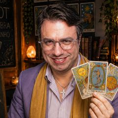

No minuto em que você nasceu, cada planeta estava a nascer, a culminar ou a pôr-se num sítio diferente da Terra. A astrocartografia desenha esses sítios no mapa-mundo: veja onde passam as suas linhas de Vénus, de Júpiter e dos outros planetas.
Preencha com os dados do seu nascimento. Aqui a hora conta muito: quatro minutos de diferença mudam as linhas cerca de 100 km. Use a hora da certidão.
Arraste para os lados para ver o resto do mundo · use + e − para aproximar · toque num planeta para o mostrar ou esconder
As linhas costumam sentir-se até cerca de 500 km para cada lado. Estas são as cidades conhecidas que ficam dentro dessa faixa.
O signo de cada planeta no seu mapa e o que a linha dele costuma trazer aos lugares por onde passa.
Carreira, imagem pública e reputação: o planeta está no ponto mais alto do céu.
Lar, raízes, família e vida privada: o planeta está por baixo dos seus pés.
O eu, a presença física e a maneira de chegar aos outros: o planeta está a nascer.
Relações, casamento, sócios e parcerias: o planeta está a pôr-se.
A astrocartografia é uma leitura simbólica: mostra tendências, não decide por si. Nenhum lugar é bom ou mau para toda a gente.
A astrocartografia é o mapa astral posto em cima do mapa-mundo. O seu mapa astral mostra onde estavam os planetas no minuto em que nasceu, vistos do sítio onde nasceu. Mas, nesse mesmo minuto, alguém noutro país via o mesmo céu de outro ângulo: em Lisboa o Sol podia estar a pôr-se, no Rio de Janeiro ainda alto, em Tóquio já de noite. A astrocartografia pergunta: em que lugares da Terra cada planeta estava exactamente num dos quatro ângulos do céu? A resposta são linhas que atravessam os continentes.
A ideia foi popularizada nos anos 70 pelo astrólogo norte-americano Jim Lewis, que lhe chamou Astro*Carto*Graphy. Hoje é usada por quem pensa em emigrar, estudar fora, mudar de cidade ou escolher onde passar uma temporada, e por quem simplesmente quer perceber porque se sentiu tão bem (ou tão desconfortável) num certo país.
No Brasil diz-se muitas vezes mapa cartográfico astrológico ou mapa astrocartográfico; é a mesma coisa. Para o desenhar, calculamos a posição de cada planeta no minuto do seu nascimento e vemos em que meridiano ele estava a culminar (a linha do Meio do Céu) e, latitude a latitude, onde estava a nascer no horizonte (Ascendente) ou a pôr-se (Descendente). As linhas do Meio do Céu e do Fundo do Céu são rectas de norte a sul; as do Ascendente e do Descendente são curvas, porque o horizonte muda com a latitude.
Usamos linhas zodiacais: cada planeta é medido pela sua posição no zodíaco, como no mapa astral, sem a pequena inclinação da órbita dele. As contas foram conferidas contra o Swiss Ephemeris, a referência dos programas de astrologia, com uma diferença máxima de um sexto de grau.
Comece pelos planetas que lhe interessam e pelo tipo de linha:
A influência é mais forte em cima da linha e vai enfraquecendo com a distância; a maioria dos astrólogos conta até 500 a 800 km. Onde duas linhas se cruzam, os dois planetas misturam-se. Vénus e Júpiter são tradicionalmente os planetas benéficos; Marte, Saturno e Plutão pedem mais esforço, mas também dão força, disciplina e capacidade de transformação. Não há linhas proibidas: há linhas que pedem mais de si.
Lembre-se de que o seu signo continua o mesmo onde quer que vá: um Sol em Câncer (Caranguejo, em Portugal) ou em Libra (Balança) não muda de signo por atravessar o oceano. O que muda é qual planeta fica em destaque. Para conhecer o resto do seu céu, veja o seu Ascendente, os 12 signos do zodíaco, o significado de Vénus e de Júpiter, e a astrologia de hoje.
É o mapa astral desenhado sobre o mapa-mundo. Para o minuto em que você nasceu, calcula-se em que lugares da Terra cada planeta estava a nascer, a culminar, a pôr-se ou no fundo do céu. Esses lugares formam linhas, e cada linha costuma trazer o tema do seu planeta para a vida de quem vive ou passa por lá.
Sim. A Terra roda um grau a cada quatro minutos, por isso quatro minutos de erro deslocam todas as linhas cerca de 100 km. Use a hora que está na certidão de nascimento. Sem hora não há astrocartografia: as linhas podiam estar em qualquer ponto do mundo.
É o caminho, no mapa-mundo, dos lugares onde Vénus estava num dos quatro ângulos do céu quando você nasceu. Vénus é o planeta do amor, da beleza e do prazer: perto da sua linha, a vida social e afectiva costuma ficar mais fácil. No Descendente tende a favorecer relações; no Meio do Céu, a imagem pública e os trabalhos ligados à arte ou às pessoas.
Não muda quem você é: o seu signo, a sua Lua e o seu mapa de nascimento são os mesmos em qualquer lugar. O que muda é o planeta que fica em destaque. Viver perto de uma linha tende a pôr esse tema mais à vista. É uma pista para reflectir, não uma ordem para fazer as malas, e as decisões continuam a ser suas.
Sim. O mapa-mundo com as suas linhas, as cidades perto de Vénus e de Júpiter e a leitura planeta a planeta são grátis, e o cálculo é feito no seu próprio telemóvel ou computador. Se quiser uma leitura pessoal, pode marcar uma consulta com o Mestre Alberto.
Sim. Mapa cartográfico astrológico, mapa astrocartográfico, astrocartografia e, em inglês, Astro*Carto*Graphy são nomes para a mesma técnica: projectar as linhas dos planetas do seu mapa astral sobre o mapa-mundo.

Numa consulta online, o Mestre Alberto junta o seu mapa astral, as suas linhas no mapa-mundo e as cartas do Tarot para olhar para a decisão que tem pela frente: o momento, o lugar e o caminho que se abre.